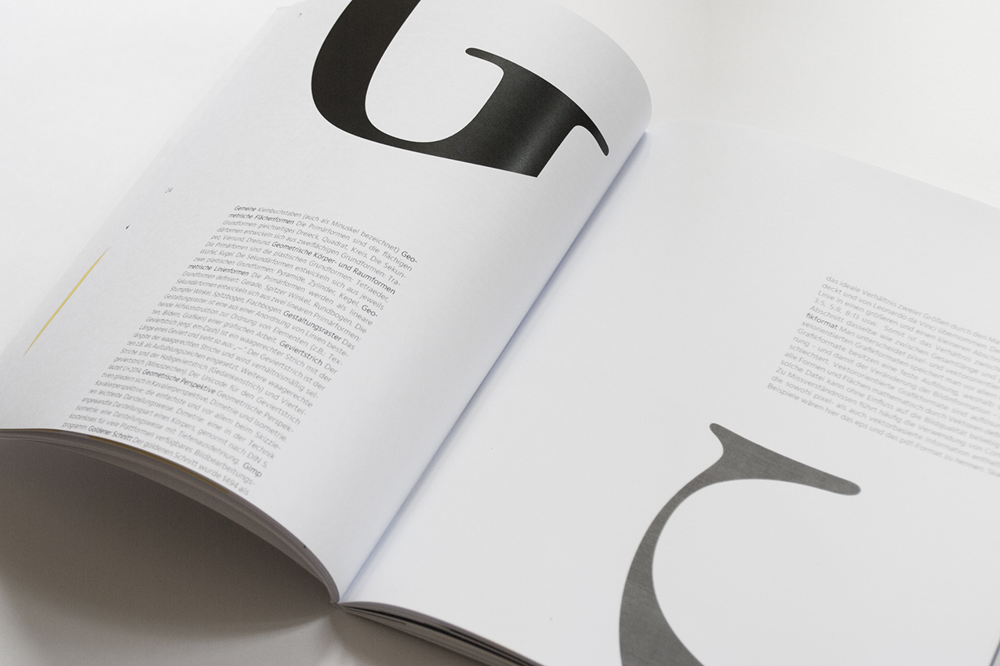

Im Rahmen des Typografiekurses an der HTW-Berlin entstand im zweiten Semester dieses Buch. In Zusammenarbeit mit Lara Kolbert und Marlen Scharf entwarf ich unter dem Titel “Von Hurenkindern und Ästhetik“ eine Wortsammlung zum Thema Grafikdesign. Dabei stand nicht unbedingt der Nutzen, sondern viel mehr die Optik des Buches im Vordergrund.

Die Idee zu dem Projekt kam uns, als wir in einem alten Lexikon zum Thema Grafikdesign lasen. Das Buch hätten wir ohne Grund niemals in die Hände genommen. Wohl aufgrund der sehr "schnöden" Gestaltung, schien es auf den ersten Blick langweilig und uninteressant für uns.
So war die Idee geboren, ein visuell ansprechendes Buch für visuell denkende zu entwerfen. Der Clue liegt darin, dass man sich das Buch aufgrund der Grafiken anschaut und nebenbei über interessante Begriffe stolpert, mal tiefer in den Text einsteigt, mal oberflächlicher.
Illustrationen, Textplatzierung sowie das Binden des 72-seitigen Buches lag in unseren Händen.

Das Buch war im Juli 2016 auf der Werkschau der HTW-Berlin zu sehen.